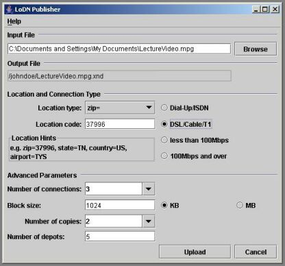
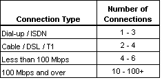

Use the LoDN Upload Client to upload the contents of a file from your local system into storage and automatically create an exNode in your current LoDN directory. In the Publisher window (Fig. 1), enter the name of the file to be uploaded in the box labeled "Input File" or click Browse to choose a file to upload. Adjust upload parameters (see below) and then click Upload. The Transfer Progress window will appear, showing the status of the upload. When the upload is complete, click OK to close the Transfer Progress window. (Note: If the new exNode does not immediately appear in your exNode directory list, use your browser's refresh command to reload the page.)
Figure 1: The LoDN Upload Client

Enter the name of the file you wish to upload in the box provided, or click Browse to choose a file to upload.
Specifies the LoDN directory location where your exNode will be placed. When you upload a file, the upload client will create an exNode, a pointer to the stored content. The exNode is named by appending the .xnd extension to the name of the uploaded file. A copy of the exNode will be stored in the current LoDN directory, where it will be automatically maintained by LoDN's exNode "warmer". (More information about exNodes and warming is available from the LoDN help pages, accessed by clicking "Help" from your LoDN home area.)
The "Location" box allows you to request that your data be stored near a specific geographical location. LoDN will place your data in available storage as near as possible to your specified location. If the data is to be downloaded from a remote location, consider storing the data near the download site. For content that will be broadly or globally distributed, you may upload content and then create copies of the content at multiple geographically locations using the "Augment" function (accessible in your LoDN home area).
To specify a geographical location, use the drop down menu to select a location type: "zip", "state", "country", or "airport". Then use the box labeled "Location Code" to enter the appropriate location code: a five digit zip code (US only), two letter state abbreviation (US only), three letter airport code, or two letter ISO country code. LoDN will store your content as near as possible to your specified location (dependent upon storage availability in the specified area).
Use the radio buttons to choose the type of connection you are using to access the Internet. Default values of "Number of Connections" and "Block Size" will be adjusted according to your connection type.
"Number of connections" refers to the maximum number of data transfer operations to be performed concurrently during upload. Each connection, or "thread," is an individual transfer (i.e. TCP) stream, delivering a separate block of data. Maximizing upload performance is a matter of balancing the number of connection threads with available resources (local memory, bandwidth, etc.). Using more connection threads usually means faster performance, provided that sufficient bandwidth and memory (on your local system) is available to the upload client. For transfers over public wide area networks, use one to three threads for TCP friendliness. For transfers over high-speed links (e.g., Abilene, ESNet, etc.), or dedicated links between research facilities, try using ten or more threads for maximum performance. See Figure 2 for further suggestions. To specify the number of connections, you may choose a number from the drop down menu, or overwrite the menu box with a positive integer.
Figure 2: Recommended Connection Settings

Since the IBP storage depots used by LoDN offer a best effort service, LoDN relies on the combined use of replication, fragmentation, and striping of fragments across multiple depots to strengthen assurance of sustained data accessibility. As on the hard drive of a computer, a file stored with IBP may be fragmented into many blocks of data, with each data block stored in a separate location. The fragments may be spread across several IBP depots, or stored in separate allocations within the same depot. A file may be left whole (one fragment) or split into many smaller data blocks. With LoDN, fragmenting the file into data blocks is controlled by specifying a block size. "Block Size" indicates the size of the data blocks into which your data will be divided. The number of fragments into which a file is partitioned will equal the total file size divided by the specified block size. If you choose a block size larger than the file size, the file will not be fragmented.
Enter a positive integer in the box labeled "Block Size," then use the radio buttons to choose units of kilobytes (KB) or megabytes (MB). Choose a block size small enough to cause sufficient fragmentation for fault tolerance considerations, but large enough to allow good upload performance. Larger block size allows faster uploads by decreasing the number of allocation operations necessary to store the file content, but the effect is asymptotic. A block size between 512 KB and 2 MB is optimal for most routine applications.
"Copies" specifies the number of replicas of your content that should be stored. Storing multiple copies guards against inaccessibility due to a network outage or data loss if one storage allocation fails. However, the value of each additional replica is balanced by the storage capacity needed to house it. Please remember that the storage resources employed by LoDN, although plentiful, are shared resources. Two to three copies provides sufficient backup in most instances. Use the drop-down menu labeled "Copies" to select a value.
As mentioned above, since the IBP storage depots used by LoDN offer a best effort service, LoDN relies on the combined use of replication, fragmentation, and striping of fragments across multiple depots to strengthen assurance of sustained data accessibility. When a file is uploaded, the file content is divided into blocks of data. Those data blocks are replicated and then distributed over several IBP depots for storage. Using multiple storage locations to house data replicas provides greater fault tolerance in case one storage depot fails. Using multiple depots will also improve download performance, as the download client will maximize speed by retrieving data from the fastest source depot. Choose the number of depots over which the data will be distributed to ensure a reasonable level of fault tolerance and download performance for the number of data blocks to be stored. A value of five depots is optimal in most instances.